1 webpack开发技术
1.1 webpack介绍
使用vue.js开发大型应用需要使用webpack打包工具，本节研究webpack的使用方法。
Webpack 是一个前端资源的打包工具，它可以将js、image、css等资源当成一个模块进行打包。
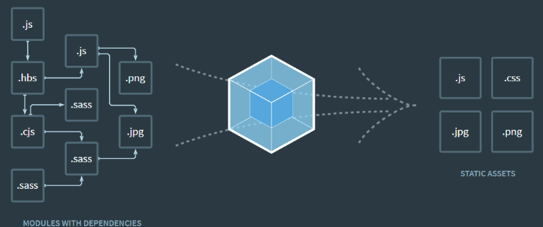
从图中我们可以看出，Webpack 可以将js、css、png等多种静态资源 进行打包，使用webpack有什么好处呢？
1、模块化开发
程序员在开发时可以分模块创建不同的js、 css等小文件方便开发，最后使用webpack将这些小文件打包成一个文件，减少了http的请求次数。
webpack可以实现按需打包，为了避免出现打包文件过大可以打包成多个文件。
2、 编译typescript、ES6等高级js语法
随着前端技术的强大，开发中可以使用javascript的很多高级版本，比如：typescript、ES6等，方便开发，webpack可以将打包文件转换成浏览器可识别的js语法。
3、CSS预编译
webpack允许在开发中使用Sass 和 Less等原生CSS的扩展技术，通过sass-loader、less-loader将Sass 和 Less的语法编译成浏览器可识别的css语法。
webpack的缺点：
1、配置有些繁琐
2、文档不丰富
1.2 安装webpack
1.2.1 安装Node.js
webpack基于node.js运行，首先需要安装node.js。
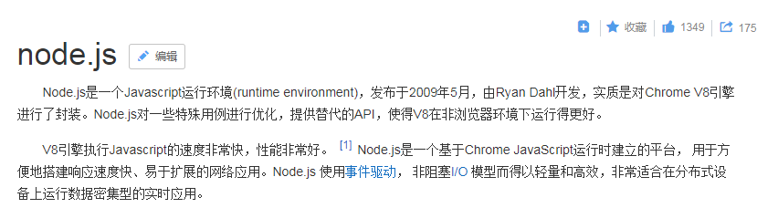
为什么会有node.js？
传统意义上的 JavaScript 运行在浏览器上，Chrome 使用的 JavaScript 引擎是 V8，Node.js 是一个运行在服务端的框架，它的底层就使用了 V8 引擎，这样就可以使用javascript去编写一些服务端的程序，这样也就实现了用javaScript去开发 Apache + PHP 以及 Java Servlet所开发的服务端功能，这样做的好处就是前端和后端都采用javascript，即开发一份js程序即可以运行在前端也可以运行的服务端，这样比一个应用使用多种语言在开发效率上要高，不过node.js属于新兴产品，一些公司也在尝试使用node.js完成一些业务领域，node.js基于V8引擎，基于事件驱动机制，在特定领域性能出色，比如用node.js实现消息推送、状态监控等的业务功能非常合适。
下边我们去安装Node.js：
1、下载对应你系统的Node.js版本:
https://nodejs.org/en/download/
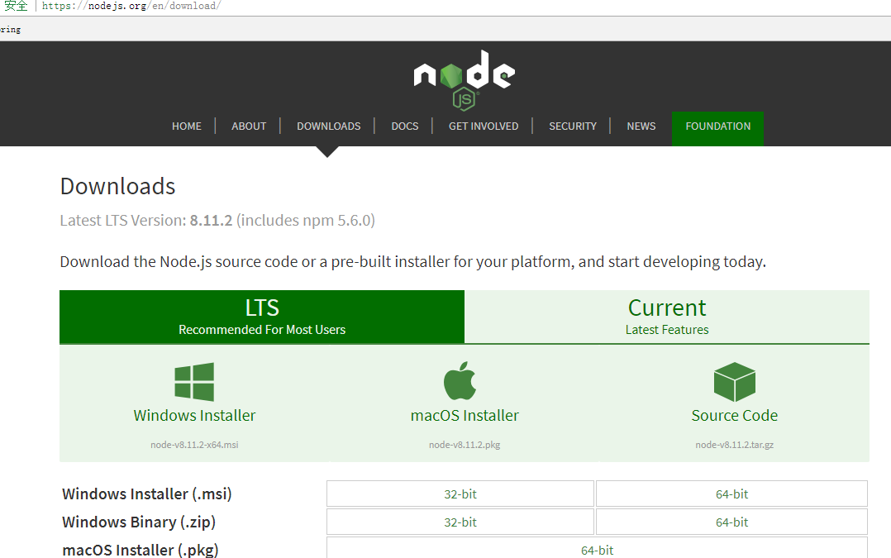
推荐下载LTS版本，本教程安装9.4.0。
2、选安装目录进行安装
默认即可
安装完成检查PATH环境变量是否设置了node.js的路径。
3、测试
在命令提示符下输入命令
1 | node -v |
会显示当前node的版本
1.2.2 安装NPM
1、自动安装NPM
npm全称Node Package Manager，他是node包管理和分发的工具，使用NPM可以对应用的依赖进行管理，NPM的功能和服务端项目构建工具maven差不多，我们通过npm 可以很方便地下载js库，打包js文件。
node.js已经集成了npm工具，在命令提示符输入 npm -v 可查看当前npm版本
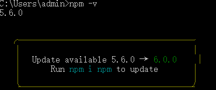
2、设置包路径
包路径就是npm从远程下载的js包所存放的路径。
使用 npm config ls 查询NPM管理包路径（NPM下载的依赖包所存放的路径）
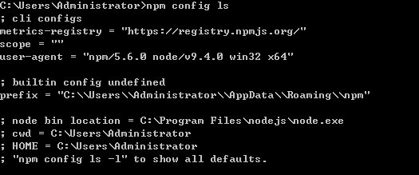
NPM默认的管理包路径在C:/用户/[用户名]/AppData/Roming/npm/node_meodules，为了方便对依赖包管理，我们将管理包的路径设置在单独的地方，本教程将安装目录设置在node.js的目录下，创建npm_modules和npm_cache，执行下边的命令：
本教程安装node.js在D:\Program Files\nodejs下所以执行命令如下：
npm config set prefix “C:\Program Files\nodejs\npm_modules”
npm config set cache “c:\Program Files\nodejs\npm_cache”
此时再使用 npm config ls 查询NPM管理包路径发现路径已更改
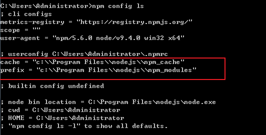
3、安装cnpm
npm默认会去国外的镜像去下载js包，在开发中通常我们使用国内镜像，这里我们使用淘宝镜像
下边我们来安装cnpm：
有时我们使用npm下载资源会很慢，所以我们可以安装一个cnmp(淘宝镜像)来加快下载速度。
输入命令，进行全局安装淘宝镜像。
npm install -g cnpm –registry=https://registry.npm.taobao.org
安装后，我们可以使用以下命令来查看cnpm的版本
cnpm -v
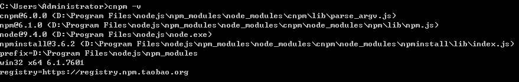
nrm ls 查看镜像已经指向taobao
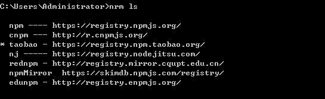
使nrm use XXX切换 镜像
如果nrm没有安装则需要进行全局安装：cnpm install -g nrm
4、非连网环境安装cnpm
从本小节第3步开始就需要连网下载npm包，如果你的环境不能连网在老师的资料文件下有已经下载好的webpack相关包，下边是安装方法。
1）配置环境变量
NODE_HOME = D:\Program Files\nodejs (node.js安装目录)
在PATH变量中添加：%NODE_HOME%;%NODE_HOME%\npm_modules;
2）找到npm包路径
根据上边的安装说明npm包路径被设置到了node.js安装目录下的npm_modules目录。
可以使用npm config ls查看。
拷贝课程资料中的 npm_modules.zip到node.js安装目录，并解压npm_modules.zip覆盖本目录下的npm_modules文件夹。
3）完成上边步骤测试
cnpm -v
1.2.3 安装webpack
1、连网安装
webpack安装分为本地安装和全局安装：
本地安装：仅将webpack安装在当前项目的node_modules目录中，仅对当前项目有效。
全局安装：将webpack安装在本机，对所有项目有效，全局安装会锁定一个webpack版本，该版本可能不适用某个项目。全局安装需要添加 -g 参数。
进入webpacktest测试目录目录，运行：
1）本地安装：
只在我的项目中使用webpack，需要进行本地安装，因为项目和项目所用的webpack的版本不一样。本地安装就会将webpack的js包下载到项目下的npm_modeuls目录下。
在门户目录下创建webpack测试目录webpacktest01：
npm install –save-dev webpack 或 cnpm install –save-dev webpack
npm install –save-dev webpack-cli (4.0以后的版本需要安装webpack-cli)
2）全局安装加-g，如下：
全局安装就将webpack的js包下载到npm的包路径下。
npm install webpack -g 或 cnpm install webpack -g
3）安装webpack指定的版本：
本教程使用webpack3.6.0，安装webpack3.6.0：
进入webpacktest测试目录，运行：cnpm install –save-dev webpack@3.6.0
全局安装：npm install webpack@3.6.0 -g或 cnpm install webpack@3.6.0 -g
2、非连网安装
参考上边 “非连网环境安装cnpm”描述，将课程资料中的 npm_modules.zip到node.js安装目录，并解压npm_modules.zip覆盖本目录下的npm_modules文件夹。
说明：已执行 “非连网环境安装cnpm”下的操作不用重复执行。
测试：
在cmd状态输入webpack，出现如下提示说明 webpack安装成功
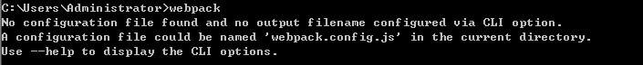
1.3 入门程序
通过本入门程序体会webpack打包的过程及模块化开发的思想。
1.3.1 需求分析
通过入门程序实现对js文件的打包，体会webpack是如何对应用进行模块化管理。
对上边1+1=2的例子使用webpack进行模块化管理
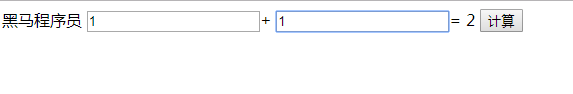
1.3.2 定义模块
创建webpacktest01目录，将vue.min.js及vue_02.html拷贝到目录下。
1、定义module01.js
在webpacktest01目录下创建module01.js
将本程序使用的加法运算的js方法抽取到一个js文件，此文件就是一个模块
1 | // 定义add函数 |
2、定义main.js
在webpacktest01目录下创建main.js，main.js是本程序的js主文件，包括如下内容：
1、在此文件中会引用module01.js模块
2、引用vue.min.js（它也一个模块）
3、将html页面中构建vue实例的代码放在main.js中。
main.js的代码如下
1 | var add = require('./module01.js'); |
1.3.3 打包测试
上边将mode01.js模块及main.js主文件编写完成，下边使用webpack对这些js文件进行打包
1、进入程序目录，执行webpack main.js build.js ，这段指令表示将main.js打包输出为 build.js文件
执行完成，观察程序目录是否出现build.js。
2、在html中引用build.js
1 | <!DOCTYPE html> |
3、测试
测试功能：
1）输入任意加数，其和会自动计算
2）点击“计算”会调用module01.js中的add方法
1.3.4 导出多个方法
需求分析：
在上边的例子定义subtraction方法实现减法运算，效果如下：
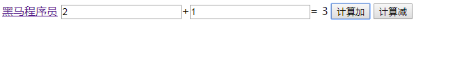
1、定义subtraction方法
在module01.js中定义subtraction方法
1 | function add(x,y){ |
也可以采用es6的写法，如下：
1 | export const add=(x,y)=>{ |
2、使用subtraction方法
在main.js中导入subtraction方法
1 | var {add,subtraction} = require('./module01') |
在vuetest_02.html中使用subtraction方法：
1 | <input type="button" value="计算减" v-on:click="subtraction"> |
1.3.5 小结
webpack可以将js分模块开发，开发完成对各模块代码打包成一个统一的文件。
前端模块开发的思想和服务端模块开发的思想是一致的，有利于多人协助开发。
1.4 webpack-dev-server
webpack-dev-server开发服务器，它的功能可以实现热加载 并且自动刷新浏览器。
1.4.1安装配置
1、安装webpack-dev-server
1）创建一个新的程序目录
这里我们创建webpacktest02目录，并在目录下创建src目录、dist目录。
将main.js、module01.js、vue.min.js拷贝到src目录。
2）使用 webpack-dev-server需要安装webpack、 webpack-dev-server和 html-webpack-plugin三个包。
cnpm install webpack@3.6.0 webpack-dev-server@2.9.1 html-webpack-plugin@2.30.1 –save-dev
安装完成，会发现程序目录出现一个package.json文件，此文件中记录了程序的依赖。
没有联网的同学拷贝老师提供的node_modules.zip到webpacktest02目录下，解压到node_modules目录下。
目录结构如下：
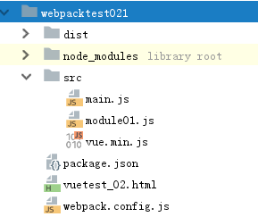
2、配置webpack-dev-server
在package.json中配置script
1 | "scripts": { |
–inline：自动刷新
–hot：热加载
–port：指定端口
–open：自动在默认浏览器打开
–host：可以指定服务器的 ip，不指定则为127.0.0.1，如果对外发布则填写公网ip地址
package.json的文件内容如下：
1 | { |
devDependencies：开发人员在开发过程中所需要的依赖。
scripts：可执行的命令
1.4.2 配置webpack.config.js
在webpacktest02目录下创建 webpack.config.js， webpack.config.js是webpack的配置文件。在此文件中可以配置应用的入口文件、输出配置、插件等，其中要实现热加载自动刷新功能需要配置html-webpack-plugin插件。
html-webpack-plugin的作用是根据html模板在内存生成html文件，它的工作原理是根据模板文件在内存中生成一个index.html文件。
1、配置模板文件
将原来的vue_02.html作为模板文件，为了和内存中的index.html文件名区别，注意将vue_02.html中的script标签去掉，内容如下：
1 | <!DOCTYPE html> |
2、配置 html-webpack-plugin
在webpack.config.js中配置html-webpack-plugin插件
1 | var htmlwp = require('html-webpack-plugin'); |
1.4.3 启动
启动文件：
1、进入 webpacktest02目录，执行npm run dev
2、使用webstorm，右键package.json文件，选择“Show npm Scripts”
打开窗口：
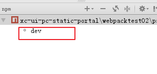
双击 dev。
注意：dev就是在package.json中配置的webpack dev server命令。
发现启动成功自动打开浏览器。
修改src中的任意文件内容，自动加载并刷新浏览器。
1.5 webpack debug调试
使用了webpack之后就不能采用传统js的调试方法在chrome中打断点。
webpack将多个源文件打包成一个文件，并且文件的内容产生了很大的变化，webpack提供devtool进行调试，devtool是基于sourcemap的方式，在调试时会生成一个map文件，其内容记录生成文件和源文件的内容映射，即生成文件中的哪个位置对应源文件中的哪个位置，有了sourcemap就可以在调试时看到源代码。
配置如下：
1、在webpack.config.js中配置：
1 | devtool: 'eval-source-map', |
webpack.config.js部分内容如下：
1 | var htmlwp = require('html-webpack-plugin'); |
2、在js中跟踪代码的位置上添加debugger
一个例子：
在add方法中添加debugger
1 | // 定义add函数 |
启动应用，刷新页面跟踪代码：
点击“计算” 即进入debugger代码位置，此时可以使用chrome进行调试了。
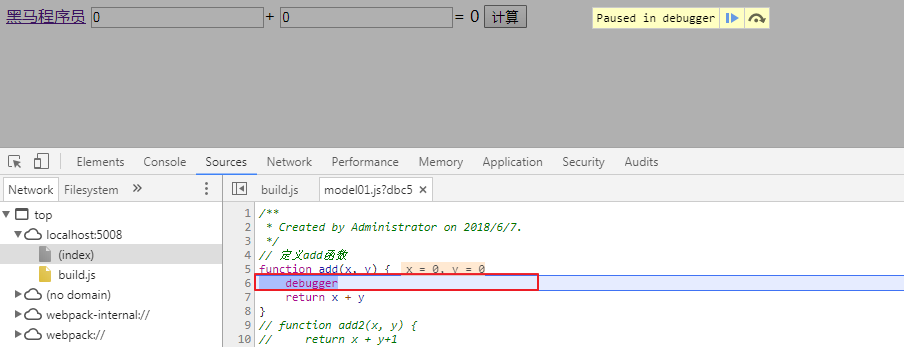